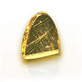
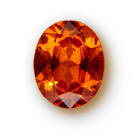
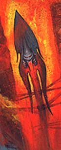

Notizie Generali
In un tempo assai remoto la civiltà degli uomini non era che ai suoi primi albori. In questo periodo, chiamato "Era Tribale", gli esseri umani vivevano in tribù, erano spesso nomadi e praticavano l'arte della caccia. Erano tempi assai duri e gli uomini erano in balia della furia degli elementi. Alcuni di loro, però, impararono ad adorare gli elementi primordiali di cui il mondo era fatto. Costoro, che furono definiti sciamani, dovevano più che altro placare le forze primordiali per impedire che si abbattessero con veemenza sulle popolazioni, anche attraverso l'offerta di sacrifici. I più potenti sciamani impararono a sfruttare gli elementi a proprio vantaggio ed a controllarne la furia distruttrice, costoro erano individui potenti e rispettati. Ancora oggi, nel mondo di Arelia, esistono intere e popolazioni che adorano le Forze Primordiali della Natura. Si pensi alle tribù di Sotoniani stanziatesi nelle terre selvagge, alle comunità Dwolf che vivono nelle remote valli montane ed a tutte le tribù umanoidi lontane dalla civiltà e dalle caotiche città. Il culto delle Forze della Natura si ricollega ai quattro elementi principali: Acqua, Aria, Terra e Fuoco.
Simboli fondamentali del Culto
I simboli principali del culto
delle Forze della Natura rappresentano sempre uno dei quattro elementi
principali Acqua,
Aria,
Terra
e Fuoco.
Il simbolo sacro utilizzato dai
chierici delle Forze della Natura è un medaglione con incisi i simboli delle
quattro forze principali dalla natura. Il medaglione ha un peso pari a 0,2
libbre ed il materiale con il quale è costruito cambia a seconda del livello del
chierico che lo indossa come indicato nella seguente tabella:
Chierico di 1° - 2° livello :
Legno (3 monete d'oro)
Chierico di 3° - 4° livello : Bronzo (7 monete d'oro)
Chierico di 5° - 6° livello : Argento (15 monete d'oro)
Chierico di 7° - 8° livello : Oro (50 monete d'oro)
Chierico di 9° + livello : Platino (100 monete d'oro)

Descrizioni raffiguranti la Divinità
Le Forze della Natura sono raffigurate sempre come animali o vegetali, ossia creature viventi legate alla natura, ma costituite interamente e circondate da uno dei quattro elementi principali (aria, acqua, terra e fuoco).

Semi-dei
SEMI-DEI : Il concetto di semi-divinità non si concilia con le Forze della Natura, essenze queste in eterno bilanciamento tra loro. Per tale motivo non esistono semi-divinità delle Forze della Natura.
Minori
MANIFESTAZIONI PRIMORDIALI :
Le Forze della Natura possono concretizzarsi
in manifestazioni
eteriche e materiali delle forze primordiali. Si tratta di creature interamente
composte di materia elementale. In particolare, esistono le quattro
manifestazioni basiche degli elementi cardinali:
Ash
(acqua) che prende la
forma di una maestosa colonna d'acqua;
Nar (aria)
che prende la forma di un
vorticoso turbine;
Agràt (fuoco)
che prende la forma di una
veemente fiamma;
Rast (terra)
che prende la forma di un colosso
di terra compatta.
Oltre a queste, esistono alcune manifestazioni che nascono dall'unione di due
diversi elementi. Le manifestazioni di forze combinate conosciute sono:
Naragràt
(aria
e
fuoco)
che prende la forma di un
turbine di scintille infuocate;
Naràsh
(aria
e
acqua)
che prende la forma di un'informe
massa nebbiosa in cui si diffondono continuamente scariche elettriche;
Rastnàr
(terra e
aria)
che prende la forma di un
vorticoso turbine di sabbia;
Rastagràt
(terra
e
fuoco)
che prende la forma di un colosso
di pietra lavica parzialmente incandescente;
Rastàsh
(terra e
acqua)
che prende la forma di un colosso
informe e pulsante di fanghiglia vischiosa;
Agratàsh
(fuoco
e
acqua)
che prende la forma di un'informe
massa vapore bollente;
Compiti dei chierici e dei fedeli
Considerato che le forze adorate sono primordiali, imprevedibili e caotiche, il compito fondamentale dei chierici delle Forze della Natura è quello di custodirne i segreti mettendoli a disposizione dei loro fedeli. I chierici sono i guardiani ed i custodi dei segreti della Terra, dell'Acqua, dell'Aria e del Fuoco. A seconda dell'indole dei chierici, queste forze possono essere imbrigliate e regolate in modo da non danneggiare le razze viventi, o lasciate libere di sfogarsi danneggiando gli esseri viventi. Pertanto i chierici delle zone selvagge, in particolar modo gli sciamani, sovente danno o lasciano sfogo alla natura distruttiva delle forze, per controbilanciare l'interesse alla regolazione nelle zone civilizzate. I chierici indossano vesti con cappucci di colore neutro (spesso sabbia, grigio ma più raramente bianco o nero) e indossano sopravvesti per indicare l'elemento allineato quel giorno: celeste intenso per l'aria, blu scuro per l'acqua, rosso fiamma per il fuoco, e marrone per la terra.

Organizzazione del Culto su Arelia
Il culto delle Forze della Natura
non ha mai sviluppato un'organizzazione centralizzata od articolata. La sua
diffusione, assai risalente, è sempre stata tramandata villaggio per villaggio
dai ministri del culto. Il tempio, denominato
Tempio degli Elementi,
può essere guidato da uno
Sciamano delle Forze Naturali,
titolo che si acquista al raggiungimento del 5° livello di esperienza. I
chierici fino al quarto livello di esperienza sono chiamati
Discepoli degli Elementi.
Una volta raggiunto il 9° livello di esperienza, si acquista il titolo di
Sommo Sciamano.
Questi ultimi sono alla guida dei templi più grandi e possono avere al loro
servizio altri Sciamani delle Forze Naturali di vario livello. Ogni tempio,
dunque, si organizza da solo e serve una comunità locale. I contatti tra i vari
templi seguono, infatti, la politica delle rispettive comunità potendo passare
da cooperazione o neutralità ad ostilità. Ogni civiltà o razza ha la sua
componente di chierici delle Forze della Natura il culto ha finito per
sviluppare peculiari caratteristiche. Visto che non c'è un'organizzazione
formale del culto non c'è neanche un luogo di insegnamento prefissato per i
nuovi Discepoli degli Elementi. Ogni Sciamano prende con sé il numero di
discepoli al quale ritiene saggio e opportuno insegnare.
Nei luoghi di culto si trovano massicci e pesanti altari di roccia intagliati
con rune elementali e nei loro pressi sono presenti totem di legno raffiguranti
manifestazioni primordiali. Presso l'altare brucia sempre almeno una torcia
perenne di proprietà dello Sciamano gestisce il tempio e sono deposte le coppe
votive di metallo o di legno. Proprio la natura frammentaria e localizzata del
culto se da un lato ne ha permesso la diffusione senza restrizioni di confini
nazionali o razziali, dall'altro ha segnato la soccombenza di questo culto nei
confronti di quelli dotati di una più efficiente organizzazione centralizzata.
Allo stato, infatti, questo culto trova diffusione in regioni remote e presso
popolazioni selvagge dotate di un'organizzazione sociale più involuta. Nelle
zone civilizzate, invece, i ministri di questo culto sono rappresentati da
studiosi, cultori degli antichi albori delle religioni, oppure da soggetti che,
opponendosi ai culti organizzati e statalizzati, si rifugiano nella simbiosi tra
creature e forze della natura. In questi casi i templi, nonostante possano
disporre di ministri assai esperti e di alto livello, non acquisiscono rilevanza
sociale né funzioni di tipo politico od amministrativo. Mentre nelle lande
selvagge e presso le comunità meno civilizzate, infatti, gli sciamani
sovrintendono alle fasi più delicate degli aspetti della vita comune (specie
nelle comunità più piccole), i templi
presenti nelle zone civilizzate rappresentano solo singole oasi dove poter
ricevere i benefici concessi dall'adorazione delle forze naturali.
Accesso agli incantesimi ed ai poteri dei sacerdoti delle Forze della Natura
Mancando un'organizzazione centralizzata del culto, l'accesso (ed il relativo costo) agli incantesimi ed ai poteri dei sacerdoti delle Forze della Natura varia notevolmente da zona a zona. Un valore certamente indicativo può essere però rappresentato dalle tariffe imposte con Bollo Imperiale a seguito degli accordi avvenuti tra Impero Scuro e maggiori templi sciamanici in contatto con tale organizzazione statale. Occorre rammentare, infatti, che la legislazione imperiale ammette ufficialmente i Culti sciamanici di Adorazione delle Forze della Natura tra le religioni praticabili legalmente nel territorio dell'Impero Scuro. In base alla previsione su menzionata, tutti gli sciamani delle Forze della Natura sono tenuti ad applicare le seguenti tariffe nell'Impero Scuro o comunque nei confronti dei membri di tale Impero:
| Tipologia di intervento divino | Costo per i fedeli | Costo per i non fedeli |
| Lettura delle Sacre Ossa | 15 karsi | 30 karsi |
| Orison | 5 karsi | 10 karsi |
| Incantesimo di 1° livello di potere | 10 karsi | 20 karsi |
| Incantesimo di 2° livello di potere | 30 karsi | 60 karsi |
| Incantesimo di 3° livello di potere | 90 karsi | 175 karsi |
| Incantesimo di 4° livello di potere | 175 karsi | 350 karsi |
| Incantesimo di 5° livello di potere | 350 karsi | 700 karsi |
| Costo supplementare | Costo per i fedeli | Costo per i non fedeli |
| per livello oltre il minimo | 8 karsi | 5 karsi |
Gemme
sacre alla divinità
| Pietra Ornamentale |
Pietra Preziosa |
Gemma Rara |
| QUARZO DI ROCCIA | GRANATO | OPALE NATURALE |
|
 |
 |
CRISTALLI ELEMENTALI
I chierici delle forze
della natura possono caricare le gemme della tipologia
quarzo di roccia
(valore pari a 5 monete d'oro e peso pari a 0,2 libbre) di energie elementali.
Queste gemme possono essere acquistate regolarmente e per caricarle il chierico
deve seguire la seguente procedura. Al momento di flusso dell'energia divina il
chierico deve incantare la gemma per renderla capace di contenere la furia
elementale. Per tale incantamento il chierico deve impiegare
5 punti preghiera.
Orbene per tutto l'arco di flusso di energia divina il chierico potrà infondere,
nel cristallo così incantato, la forza degli elementi. Per infondere tale
energia il chierico dovrà utilizzare il cristallo come componente materiale
supplementare nel corso del lancio di qualsiasi suo incantesimo durante un
combattimento che sia considerato impegnativo per il personaggio. Tale utilizzo
impone al chierico una
penalità di +3 al casting time
della magia. Se la magia è lanciata con successo nel cristallo sarà, quindi,
contenuta l'energia elementale del tipo corrispondente all'incantesimo (se la
magia è comune a vari elementi sarà il chierico a sceglierne uno decidendo quale
energia ha inserito nel cristallo). Una volta che nel cristallo sarà stata
inserita l'energia corrispondente a tutti e quattro gli elementi il chierico
avrà creato il cristallo elementale.
I cristalli elementali possono essere utilizzati unicamente dal chierico delle
Forze della Natura che li ha incantati in vari modi, ad esempio per invocare
l'intervento divino e per costruire oggetti magici. Inoltre, i cristalli
elementali possono essere utilizzati nelle due seguenti modalità, in ogni caso
quando sono utilizzati i cristalli si sgretolano distruggendosi.
INCREMENTO DEL LIVELLO DI LANCIO
Il chierico può utilizzare un cristallo elementale per incrementare di uno il
livello di lancio una magia che si appresta a lanciare. Per utilizzare il
cristallo in questo modo il chierico dovrà utilizzarlo come componente materiale
supplementare nel corso del lancio di qualsiasi suo incantesimo. Tale utilizzo
impone al chierico una
penalità di +1 al casting time
della magia. Questo metodo di utilizzo del cristallo non può essere cumulato con
altri metodi di elevamento del livello del lancio come quello previsto dalla
competenza "Power Prayer".
SCATENARE LA FURIA
ELEMENTALE
Il chierico può utilizzare un cristallo come se fosse un
"Crystal of Elemental
Fury". In questo caso però il
cristallo si attiverà con una
percentuale di successo pari al 70% + 1% per livello di esperienza del chierico
che utilizza il cristallo. Se il tiro fallisce il cristallo si sgretolerà senza
avere effetti, altrimenti avrà i medesimi effetti di un
"Crystal of Elemental
Fury" ma l'elemento che si scatenerà sarà selezionato casualmente.
Schema di gioco
Allineamento
Divinità:
Chierici:
Lawful Neutral, True Neutral,
Seguaci:
Abilità minime richieste
Saggezza 12
(con
Saggezza 16
o + = bonus +10% ai punti esperienza)
Razze permesse
Chierici: Qualsiasi
Fedeli:
Nonweapon Proficiencies (priest,
general)
Weapon Proficiencies
Armi e armature permesse
Scudi
Armi : Armi ad Asta
- Lance
Poteri Speciali
Momento di flusso dell'energia divina: Il momento utilizzato dalle Forze della Natura è l'alba (ore 7.00).
Lettura
|
1) La creatura non riceve alcun beneficio e chierico non può più utilizzare il potere nella medesima giornata. 2) La creatura riceve un bonus di +1 ai suoi Tiri per Colpire. 3) La creatura riceve un bonus di +1 ai Danni. 4) La creatura riceve un bonus di +1 alla sua Classe Armatura. 5) La creatura riceve un bonus di +1 ai suoi Tiri Salvezza. 6) La creatura riceve un bonus di +1 a scelta tra quelli sopra indicati. |
La creatura quindi riceverà il beneficio indicato fino al successivo momento di flusso dell'energia divina delle Forze della Natura. Il beneficio deve considerarsi di origine divina e non può essere dissolto utilizzando una magia di Dispel Magic. Una volta utilizzato su una creatura questo potere non potrà più essere riutilizzato sulla medesima creatura nell'arco della stessa giornata.
Lancia della Furia Elementale
|
 |
Percentuale base: 50% Bonus per il livello di esperienza: bonus di +3% per ogni livello oltre il 5° Competenza Ceremony: bonus di +5% prova riuscita, malus -4% prova fallita (+10% successo critico, -8% fallimento critico). Utilizzo di componenti supplementari per 50 monete d’oro: bonus di +5% Utilizzo di un unico cristallo degli elementi: bonus di +7% |
Un tiro puro da 01 a 05% risulterà sempre in un successo, un tiro puro da 96 a 100% risulterà sempre un fallimento.
Se la prova ha successo la lancia dello sciamano si considererà a tutti gli effetti incantata con l’incantamento Lesser Elemental (link) per un periodo pari a 30 giorni. Il potere della lancia, però, potrà attivarsi solo qualora sia lo stesso sciamano che ha incantato la lancia ad utilizzarla in combattimento. In deroga alle normali regole sugli oggetti magici, con questo potere magico può essere incantata anche una lancia già incantata con un diverso potere magico (fatta eccezione per gli incantamenti della tipologia "Elemental" che impediranno a questo incantamento di svolgere effetti). In ogni caso uno sciamano non può provare ad effettuare nuovamente questo rituale prima che siano trascorsi trenta giorni.
Il danno elementale prodotto dipenderà dall’elemento cardine scelto dallo sciamano secondo il seguente schema: aria - lightning, acqua - cold, terra e fuoco - fire. In ogni caso, inoltre, l’arma produrrà 5 danni elementali del tipo previsto (non potendo lo sciamano selezionare la modalità di danno casuale).
Protezione dagli Elementi
Incantesimi
Le Forze della Natura concedono incantesimi che hanno a che fare con i quattro elementi fondamentali, con la forza distruttiva della natura e con la divinazione, la caccia e le altre arti primitive.
REGOLE SPECIALI PER IL LANCIO DEGLI INCANTESIMI DELLE FORZE DELLA NATURA
Ogni sciamano, durante le preghiere effettuate giornalmente per memorizzare i
propri incantesimi deve necessariamente decidere a quale Forza della Natura
principale decide di rendersi devoto per quella giornata tra: Ash
(acqua), Nar (aria),
Agràt (fuoco)
e
Rast (terra).
Orbene, in base alla scelta effettuata, si applicheranno le seguenti regole in
fase di memorizzazione delle magie:
1) Lo sciamano potrà
memorizzare a costo normale le magie dell'elemento selezionato.
2) Lo sciamano potrà scegliere gli incantesimi liberi memorizzati solo tra le
magie dell'elemento selezionato.
3) Lo sciamano potrà, investendo il doppio dei normali punti preghiera,
memorizzare singoli incantesimi delle liste degli elementi vicini a quello
selezionato.
4) In nessun caso lo sciamano potrà memorizzare incantesimi delle liste
dell'elemento opposto a quello selezionato.
Ogni giorno, dunque, lo sciamano potrà cambiare l'elemento principale al quale è
devono con l'unica limitazione che
costui non potrà scegliere il
giorno successivo di essere devoto all'elemento opposto a quello selezionato il
giorno precedente (essendo
necessario prima un passaggio attraverso un elemento intermendio). Si noti che
gli Orison fanno eccezione a tale regola potendo essere scelti sempre tutti
indipendentemente dall'elemento selezionato.
Ovviamente l'acqua è elemento opposto del fuoco; la terra è elemento opposto dell'aria.
Esistono, inoltre, incantesimi comuni a due o più elementi. Alcuni di questi incantesimi svolgono effetti diversi a seconda dell'elemento con il quale sono stati memorizzati. Questi incantesimi solo contraddistinti da un asterisco che ne segue il nome nella lista delle magie. Il chierico potrà, quindi, utilizzare tra quelli possibili solo l'effetto dell'elemento al quale è devoto (a meno che non memorizzi la magia come incantesimi singolo al doppio del costo selezionando in fase di memorizzazione a quale elemento vicino condizionarlo). Ad esempio, un chierico che durante le preghiere decida di essere devoto a Nar (aria), qualora memorizzi una magia di Summon Fundamental potrà richiamare ad esistenza unicamente un Air Fundamental (in fase di memorizzazione potrebbe, pagando il doppio la magia, memorizzare la magia legandola al piano del fuoco o dell'acqua e potendo evocare, quindi, solo quel determinato tipo di elementale).
Incantesimi generali (Player's Handbook,Tome of Magic,Spell and Magic,Necromancers)
1° livello
| Call Upon Faith | Acqua; Aria; Terra; Fuoco |
|
Combine |
Acqua; Aria; Terra; Fuoco |
| Detect Magic | Acqua; Aria; Terra; Fuoco |
|
Endure Cold and Heat |
Acqua; Aria; Terra; Fuoco |
| Find Water | Acqua |
| Magical Stone | Terra |
| Precipitation | Acqua |
| Purify Food and Drink | Acqua; Aria; Terra; Fuoco |
| Torch of Everburning | Fuoco |
| Water Shield | Acqua |
| Wind Column | Aria |
2° livello
| Augury | Acqua; Aria; Terra; Fuoco |
| Dust Vortex | Aria |
| Elemental Tentacle* | Acqua; Aria; Terra; Fuoco |
| Elemental Trap* | Acqua; Aria; Terra; Fuoco |
| Elemental Weapon* | Acqua; Aria; Terra; Fuoco |
| Heat Metal | Fuoco |
| Hesitation | Acqua; Aria; Terra; Fuoco |
| Produce Flame | Fuoco |
| Resist Cold | Acqua; Aria; |
| Resist Fire | Terra; Fuoco |
| Sanctify | Acqua; Aria; Terra; Fuoco |
| Water Drop | Acqua |
3° livello
| Accelerate Healing | Acqua; Aria; Terra; Fuoco |
| Choose Future | Acqua; Aria; Terra; Fuoco |
| Dispel Magic | Acqua; Aria; Terra; Fuoco |
| Meld into Stone | Terra |
| Protection from Fire | Fuoco |
| Thunderclap | Aria |
| Zone of Sweet Air | Aria |
| Water Walk | Acqua |
| Weather Prediction | Acqua; Aria; Terra; Fuoco |
| Wind and Rain Protection | Acqua; Aria; |
4° livello
| Control Temperature | Acqua; Aria; Terra; Fuoco |
| Fire Purge | Acqua; Aria; |
| Focus | Acqua; Aria; Terra; Fuoco |
| Ground of Fire | Fuoco |
| Protection from Elemental* | Acqua; Aria; Terra; Fuoco |
| Protection from Lightning | Aria |
| Stone of Sharpening | Terra |
| Wall of Water | Acqua |
| Weather Stasis | Acqua; Aria; Terra; Fuoco |
Incantesimi speciali (Unici della divinità)
1° livello
| Flame Lash | Fuoco |
|
Minor Skin of Rock |
Terra |
| Reinvigorating Water | Acqua |
|
Smoke Screen |
Aria; Fuoco |
|
Summon Fundamental* |
Acqua; Aria; Terra; Fuoco |
|
Vortex of Rubble |
Aria; Terra |
| Water Surge | Acqua |
|
Wind Spear |
Aria |
2° livello
|
Boulder Conjuration |
Terra |
|
Circular Wave |
Acqua |
|
Domain of Earth |
Terra |
|
Domain of Water |
Acqua |
| Electrical Barrier | Aria |
|
Flaming Vortex |
Fuoco |
|
Fire Barrier |
Fuoco |
|
Fist of Rock |
Terra |
|
Glacial Spheres |
Acqua |
|
Water Floor |
Acqua |
| Whirling Shield | Aria |
| Wind Jet | Aria |
3° livello
|
Arm of Rock |
Terra |
| Circles of Sharp Air | Aria |
|
Earth Floor |
Terra |
|
Flaming Snakes |
Fuoco |
| Orbs of Flame | Fuoco |
|
Rain of Rocks |
Terra |
|
Thermal Spring Water |
Acqua |
|
Water Horse |
Acqua |
| Whirlwind | Aria |
4° livello
|
Blizzard |
Acqua; Aria |
|
Boulder Throwing |
Terra |
|
Greater Flaming Vortex |
Fuoco |
|
Rain of Flame |
Fuoco |
|
Skin of Rock |
Terra |
|
Sandstorm |
Terra |
| Thunderbolt | Aria |
|
Waterspray |
Acqua |